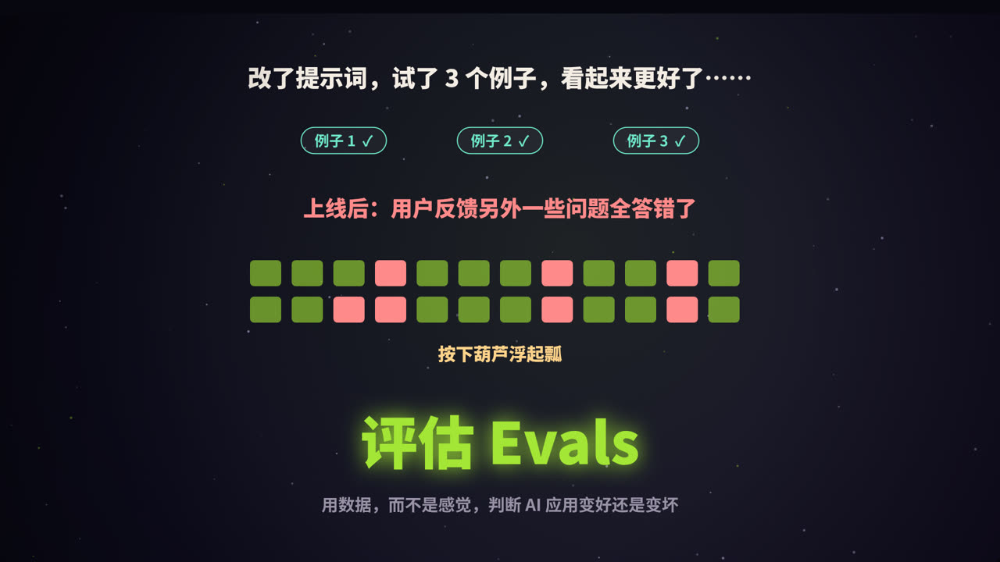
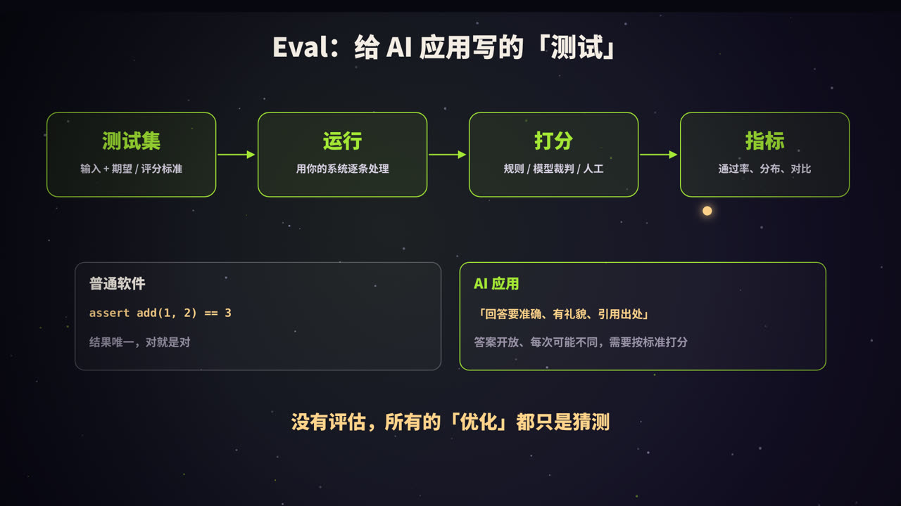
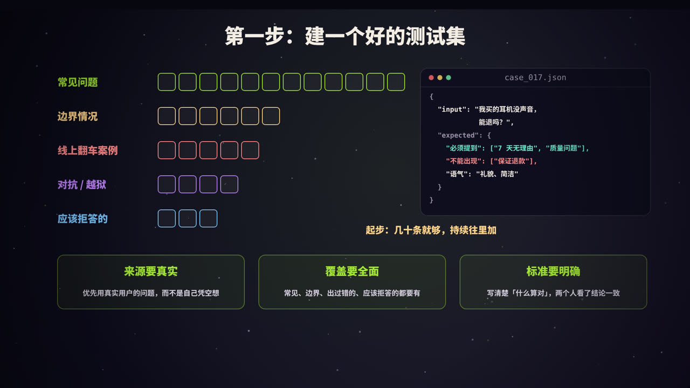
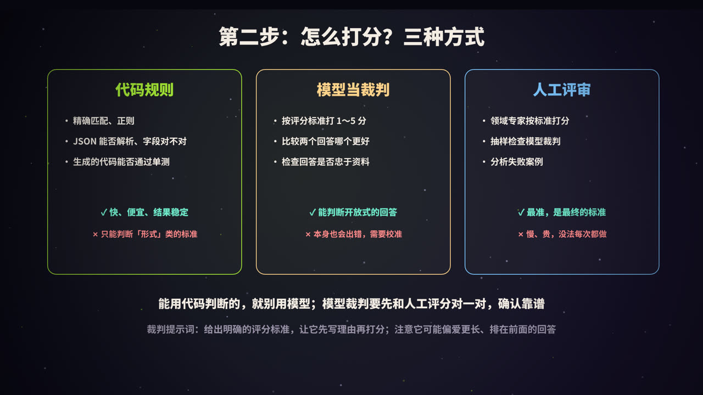
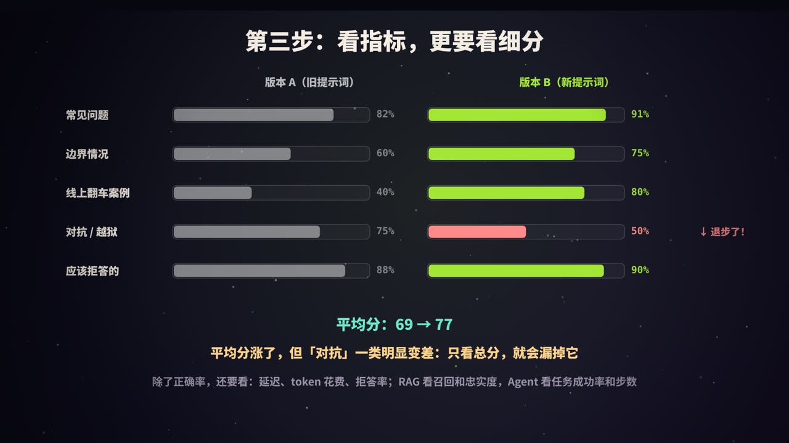
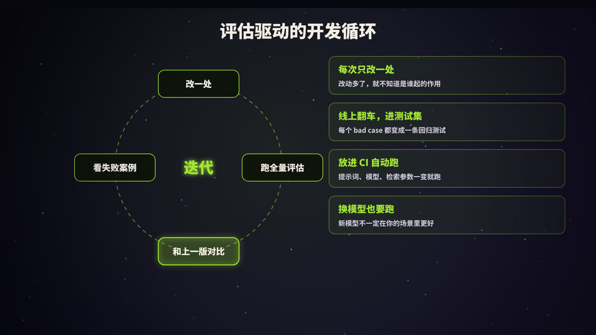
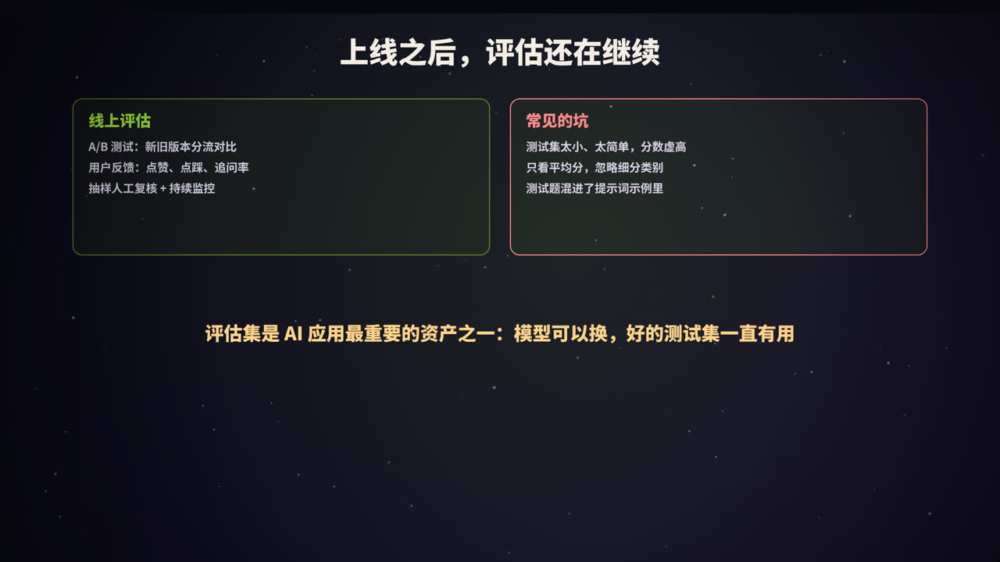

一个常见的场景
你调整了提示词，随手试了三个例子，回答都比以前好，于是放心上线了。几天后，用户反馈另外一些问题全答错了，而这些问题以前是能答对的。
这就是开发 AI 应用最常见的陷阱：凭感觉改。大模型的输出是开放的、不确定的，改一处可能影响很多地方，只看几个例子，根本发现不了。
评估（Evaluation，常简称为 Evals）就是解决这个问题的方法：准备一组有代表性的测试用例，每次改动后都完整跑一遍，用数据判断系统是变好了还是变坏了。
什么是 Eval

一个评估流程包括四个环节：
| 环节 | 内容 |
|---|---|
| 测试集 | 一组输入，以及对应的期望输出或评分标准 |
| 运行 | 用你的完整系统（提示词、检索、工具……）逐条处理 |
| 打分 | 判断每条输出好不好：代码规则、模型裁判、人工评审 |
| 指标 | 汇总成通过率、平均分、分类别统计，并和上一版对比 |
可以把它理解为「给 AI 应用写的测试」。但和普通软件测试相比，有一个本质区别：
- 普通软件：
assert add(1, 2) == 3，结果唯一，对就是对； - AI 应用：要求「回答准确、有礼貌、引用出处」，答案是开放的，每次可能不同，需要按标准打分。
没有评估，所有的「优化」都只是猜测。
第一步：建一个好的测试集

测试用例从哪来
| 类别 | 说明 |
|---|---|
| 常见问题 | 用户最常问的、最核心的场景，占大头 |
| 边界情况 | 表述模糊、信息不全、多个意图混在一起的问题 |
| 线上翻车案例 | 真实出过错的 bad case，每一条都很宝贵 |
| 对抗与越狱 | 试图让系统做不该做的事、绕过限制的输入 |
| 应该拒答的 | 超出范围、资料中没有答案的问题，检验系统会不会「编」 |
原则：
- 来源要真实：优先使用真实用户的问题（注意脱敏），自己想出来的问题往往太「干净」；
- 覆盖要全面：各个类别都要有，不能只测简单情况；
- 标准要明确：写清楚「什么算对」，最好两个人独立判断能得到一致的结论；
- 从小开始：几十条精心挑选的用例，就足以发现大部分问题。之后持续往里加。
一条测试用例长什么样
{
"id": "case_017",
"category": "售后",
"input": "我买的耳机没声音，能退吗？",
"expected": {
"must_include": ["7 天无理由", "质量问题"],
"must_not_include": ["保证退款"],
"tone": "礼貌、简洁"
}
}
对于有标准答案的任务（分类、信息提取、数学题），直接写期望的结果；对于开放式任务（客服回答、写作），写评分标准：必须包含什么、不能出现什么、语气和长度要求等。
第二步：怎么打分

| 方式 | 适合判断 | 优点 | 缺点 |
|---|---|---|---|
| 代码规则 | 精确匹配、关键词、正则、JSON 格式、字段值、代码能否通过单测 | 快、便宜、结果稳定可复现 | 只能判断形式上的标准 |
| 模型当裁判 | 回答是否正确、是否忠于资料、语气是否合适、两个回答哪个更好 | 能处理开放式回答，规模化 | 本身也会出错，需要校准 |
| 人工评审 | 任何标准，尤其是需要专业判断的 | 最准确，是最终标准 | 慢、贵，难以频繁进行 |
原则：能用代码判断的，就不要用模型。 比如「输出是否是合法 JSON」「是否包含必须提到的关键词」，用代码判断又快又准。
用模型当裁判（LLM-as-a-Judge）
对于开放式的回答，可以让另一个模型按照评分标准打分。一个裁判提示词的例子：
你是一名客服质量评审员。请根据评分标准，评估下面的客服回答。
<question>{用户问题}</question>
<reference>{参考资料}</reference>
<answer>{待评估的回答}</answer>
评分标准：
1. 准确：内容与参考资料一致，没有编造（最重要）
2. 完整：回答了用户真正关心的问题
3. 得体：礼貌、简洁，没有承诺做不到的事
先逐条写出你的分析，再给出 1～5 的总分。
输出 JSON：{"reasoning": "...", "score": 1-5}
用好模型裁判的要点：
- 评分标准要具体：「回答好不好」太模糊，要拆成可判断的维度；
- 先写理由，再打分：判断更稳定，也便于人工检查裁判是否靠谱；
- 用人工结果校准：抽取一部分用例，同时让人和模型打分，确认两者的一致程度足够高，再大规模使用；
- 注意偏差：模型裁判可能偏爱更长的回答、排在前面的回答，或者和自己风格相近的回答。比较两个回答时，可以交换顺序各评一次；
- 二元判断比细分分数更可靠：「是否忠于资料：是 / 否」往往比「1～10 分」更稳定。
第三步：看指标，更要看细分

假设新提示词在各类别上的表现如下：
| 类别 | 版本 A | 版本 B |
|---|---|---|
| 常见问题 | 82% | 91% |
| 边界情况 | 60% | 75% |
| 线上翻车案例 | 40% | 80% |
| 对抗 / 越狱 | 75% | 50% |
| 应该拒答的 | 88% | 90% |
| 平均 | 69% | 77% |
平均分从 69% 涨到了 77%，看起来是一次成功的改进。但按类别细看，「对抗 / 越狱」一类从 75% 跌到了 50%，安全性明显变差了。只看总分，就会漏掉这种退步。
除了正确率，还应该看什么
| 维度 | 指标 |
|---|---|
| 质量 | 通过率、平均分、各类别通过率 |
| 成本 | 每次请求的 token 数、费用 |
| 速度 | 延迟（平均值和 P95） |
| 安全 | 拒答率、越狱成功率、敏感信息泄露 |
| RAG 系统 | 检索召回率、回答忠实度、引用准确率 |
| Agent | 任务成功率、平均步数、工具调用错误率 |
因为模型输出有随机性，对于关键结论，可以把每条用例多跑几次，看结果是否稳定。
一个最小的评估脚本
import json
from collections import defaultdict
def judge(case, output):
exp = case["expected"]
if any(k not in output for k in exp.get("must_include", [])):
return False
if any(k in output for k in exp.get("must_not_include", [])):
return False
return True # 开放式标准可以再调用模型裁判
def run_eval(cases, system):
stats = defaultdict(lambda: [0, 0]) # 类别 -> [通过数, 总数]
failures = []
for case in cases:
output = system(case["input"])
ok = judge(case, output)
stats[case["category"]][0] += ok
stats[case["category"]][1] += 1
if not ok:
failures.append({"id": case["id"], "output": output})
for cat, (passed, total) in sorted(stats.items()):
print(f"{cat:<10} {passed}/{total} {passed / total:.0%}")
return failures # 失败案例要逐条看
cases = [json.loads(line) for line in open("cases.jsonl", encoding="utf-8")]
failures = run_eval(cases, system=my_app) # my_app：你的完整应用
不必一开始就用复杂的框架，一个脚本加一个 JSONL 文件就能起步。需求复杂之后，可以考虑 promptfoo、OpenAI Evals、RAGAS、LangSmith 等工具。
评估驱动的开发循环

- 每次只改一处：提示词、模型、检索参数、工具定义……同时改多处，就不知道是哪个起了作用；
- 跑全量评估：在整个测试集上运行，而不是只挑几个例子；
- 和上一版对比：整体指标和每个类别都要比，重点关注退步的地方；
- 逐条看失败案例：指标只告诉你「有问题」，失败案例才告诉你「问题是什么」。
再加上三个习惯：
- 线上翻车，进测试集：每个 bad case 修复后都加入测试集，成为一条回归测试，防止同样的问题再次出现；
- 放进 CI 自动跑：提示词、模型版本、关键参数变化时自动运行评估，结果不达标就阻止合并；
- 换模型也要跑：新模型在通用榜单上更强，不代表在你的场景里更好。
上线之后，评估还在继续

离线测试集无法覆盖所有真实情况，上线后还需要：
- A/B 测试：新旧版本各分一部分流量，比较业务指标（问题解决率、转人工率、用户满意度）；
- 用户反馈：点赞、点踩、重新生成、追问率，都是信号；
- 抽样人工复核：定期随机抽取线上对话，人工评审，发现新的问题类型；
- 监控：延迟、费用、错误率、拒答率的异常波动。
常见的坑
| 坑 | 后果 |
|---|---|
| 测试集太小、太简单 | 分数虚高，发现不了问题 |
| 只看平均分 | 某一类别的退步被掩盖 |
| 测试用例出现在提示词的示例里 | 相当于「泄题」，分数不可信 |
| 裁判没有校准 | 模型裁判本身的偏差被当成真相 |
| 测试集长期不更新 | 跟不上用户的真实使用情况 |
总结
- 为什么：AI 应用的输出开放且不确定，凭感觉改很容易「按下葫芦浮起瓢」；
- 测试集：真实、全面、标准明确，从几十条起步，持续积累；
- 打分：能用代码就用代码，开放式的用模型裁判，并用人工校准；
- 指标：不只看平均分，还要看细分类别、成本、延迟和安全；
- 循环：改一处、跑全量、对比、看失败案例；线上 bad case 进测试集；
- 评估集是 AI 应用最重要的资产之一：模型可以换，好的测试集一直有用。
参考资料
- Anthropic. Define success criteria and build evaluations（官方文档）. docs.claude.com
- Zheng, L., et al. (2023). Judging LLM-as-a-Judge with MT-Bench and Chatbot Arena. NeurIPS.
- Es, S., et al. (2023). RAGAS: Automated Evaluation of Retrieval Augmented Generation. arXiv:2309.15217.
- Husain, H. (2024). Your AI Product Needs Evals. hamel.dev
- OpenAI Evals：github.com/openai/evals